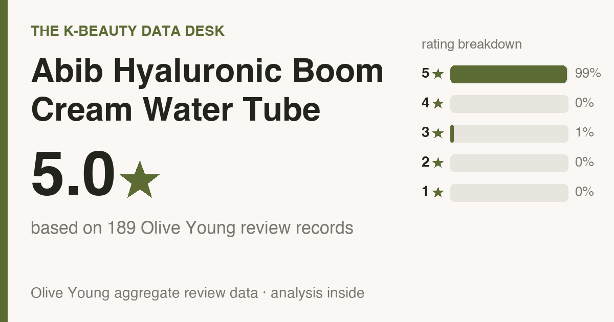
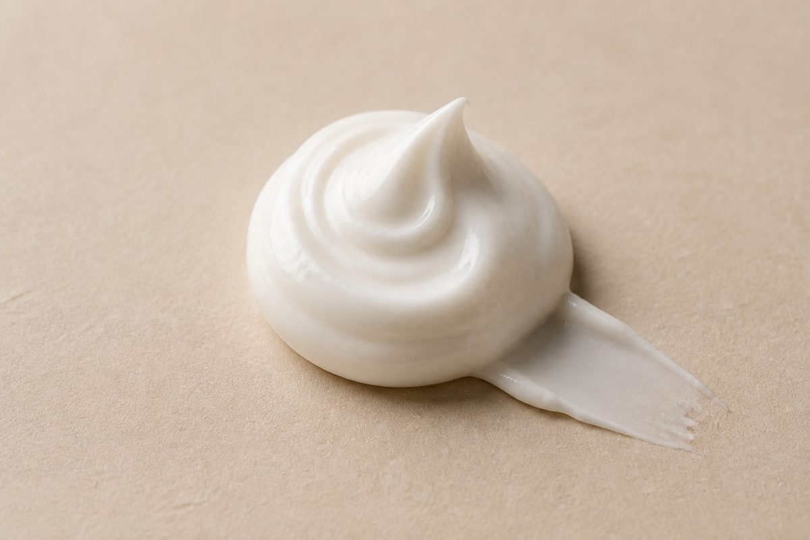
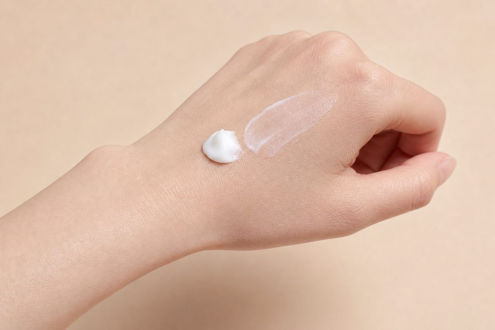

Data captured July 2026. This analysis uses 189 aggregate Olive Young ratings, plus anonymous theme counts from a capped sample of 189 helpful review records. The source data does not verify every buyer's identity, and no individual review text is reproduced or translated.
Store-link note: the shopping links below contain no affiliate tracking ID. No affiliate commission is currently earned from them.

The short version: Small displayed base, not a settled verdict. Only 189 review records were captured and the five-star share is 99% (average 5.0★). A base this small gives each record more influence, so read everything below as limited aggregate context, not a proven track record.

The Korea promo-pack listing price was ₩26,800 (≈ $19 at exchange rates) on Olive Young Korea when I pulled the data (2026-07-09). The captured listing was a promo pack, so this amount can cover more than one item. That is a Korea price, not a quote for another market. Check the current regional listing, pack size, seller, and checkout total before comparing it with the dated figure.
Abib Hyaluronic Boom Cream Water Tube appeared in the captured Olive Young Korea ranking data. Olive Young is a Korean health-and-beauty retailer; this article analyzes its displayed aggregate ratings, polls, and capped anonymous topic counts. It does not reproduce individual reviews or treat ranking position as proof of product performance.
The average is 5.0 stars across only 189 review records, with a 99% five-star share. The small base can move materially as more ratings arrive, so treat it as an early aggregate snapshot rather than a stable conclusion.
Anonymous theme counts were computed from up to 189 of the most-helpful review records. These deeper numbers come from that capped sample; the star rating and any captured polls shown earlier come from the source's aggregate display. No individual review text is reproduced:
No usable skin-type poll was captured, so this data cannot name a best skin type.
No complete ingredient list was captured, so fragrance and alcohol status are unknown. Check the current regional package or official label, including synonyms this parser may not recognize. If an ingredient matters because of a known allergy or skin condition, ask a qualified clinician; a rating cannot answer that question.
The snapshot does not include verified product directions, so this section does not invent an amount or schedule:

The aggregate data cannot show that switching from a cream that already works will improve your result. Unless a verified feature here fills a specific gap, keeping what already works is reasonable.
There is not enough rating and poll evidence for a confident recommendation yet. Use the dated rating and poll data as context, and do not infer an ingredient's dose or effectiveness from its label position.
No complete ingredient list was captured, so I can't confirm fragrance status. Check the current regional ingredient list rather than inferring it from ratings or the product name.
No made-up dupes here. Compare products in the same category using their current aggregate data and verified features, then compare price.
The links below search Amazon US and Olive Young's US storefront. Availability, seller, formula, price, shipping, and destination coverage can change, so verify the current listing and checkout terms.
The available data lacks enough rating and poll evidence for a confident recommendation. Treat the current rating as aggregate context, not proof of fit or performance.
Not your match? Here are other posts built from the same scoped aggregate fields and explicit data limits:
Store-link note: the links below are ordinary search links; no affiliate tracking ID is configured.
If you're in the US:
Outside the US:
On prices: the captured price above is the dated Olive Young Korea shelf figure (pulled 2026-07-09). Stores reprice and bundles can change the basis, so verify the current pack and checkout total.
← All K-Beauty Data Desk reviews · Best-seller rankings · About & methodology
Published by The K-Beauty Data Desk · Aggregate data captured 2026-07-09. The source data does not independently verify every buyer's identity. No individual review is reproduced or translated, and I did NOT test the product on my own skin. I received no free product and am not paid or approved by the brand. Check the source ratings yourself.
Data basis: aggregate statistics from Olive Young Korea, retrieved 2026-07-09. The ratings, review count, star distribution and satisfaction polls are all facts pulled in aggregate. The wording, decoding and recommendations are mine. No individual user review is copied or translated.